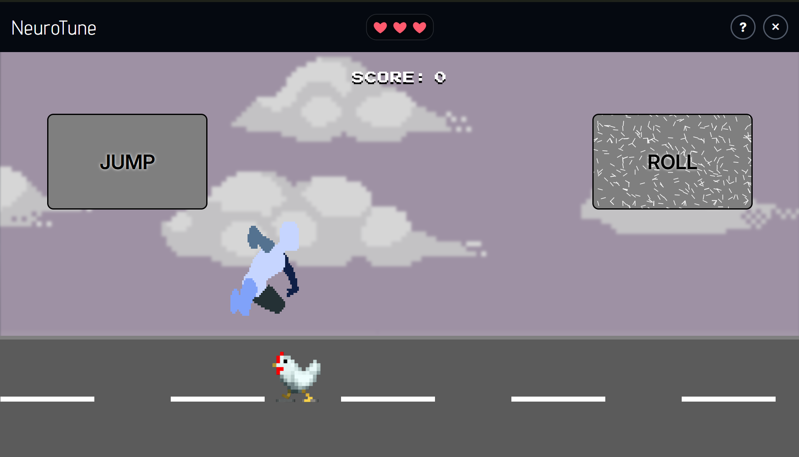
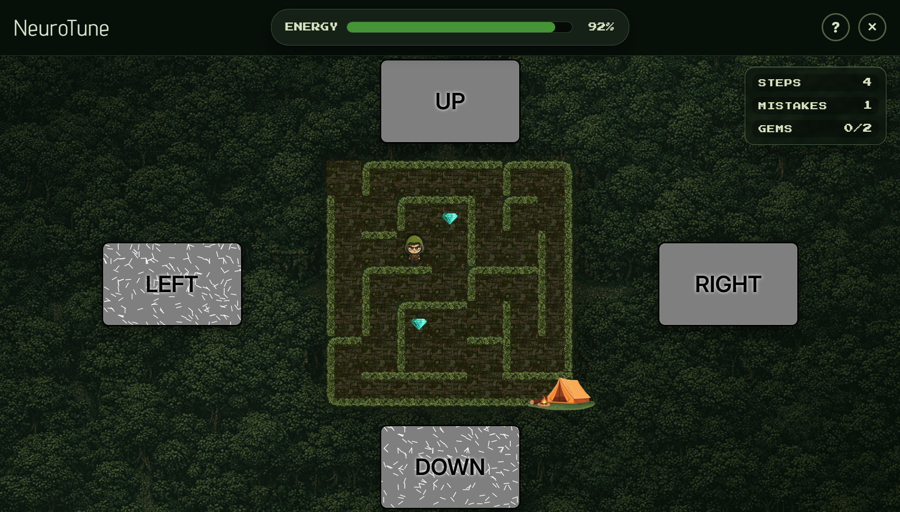
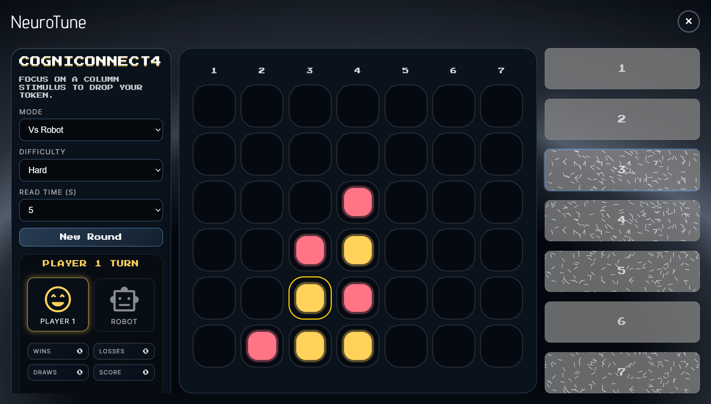

01 / ACTION
NeuroDash
Read the road and react with focus. Jump over ground obstacles, roll under birds and build a high score without losing all three lives.
BCI game suite
NeuroTune brings together three attention-driven SSVEP games and a calibration feature that tunes the visual experience around each player.
03Game genres
03Ways to tune
MULTIHeadset support
A narrative puzzle, an endless runner and a strategy duel, all designed to turn selective visual attention into movement, split-second reactions and social play.

01 / ACTION
Read the road and react with focus. Jump over ground obstacles, roll under birds and build a high score without losing all three lives.

02 / EXPLORATION
Guide a ranger through a forest maze before energy runs out. Choose a direction, collect gems and reach the campsite with as few mistakes as possible.

03 / STRATEGY
Focus on a column to drop your token and connect four. Play against a friend or choose from three robot difficulty levels.
NeuroTune's integrated calibration feature evaluates the visual settings that shape an individual's SSVEP response, helping improve comfort, classification stability and in-game control.
Headset support, calibration and three distinct genres share one lightweight platform.
Use a supported EEG headset or connect an LSL-compatible device.
Tune frequency, pattern and colour around the player, before or after play.
Use the same profile and interaction model across all three games.
Play. Test. Tune.
NeuroTune is part of the NeuroBCI and BrainWeb research ecosystem at the University of Malta.